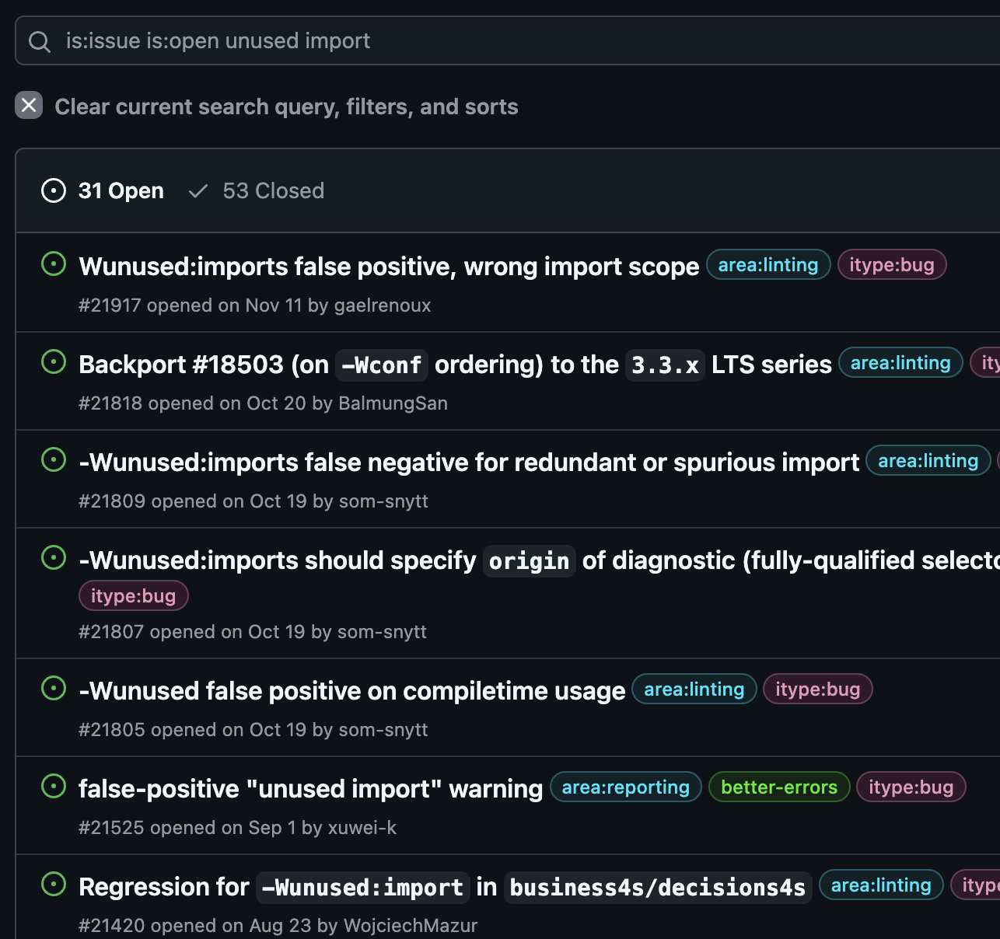

class: center, middle ## 数十万行のプロジェクトを<br/>Scala 2から3に完全移行した [Scalaわいわい勉強会 4](https://scala-tokyo.connpass.com/event/335477/) 2024-12-13 --- class: middle <img src="image/xuwei.gif" alt="icon" style="zoom: 0.3" /> - X(旧twitter) [@xuwei_k](https://x.com/xuwei_k) - github [@xuwei-k](https://github.com/xuwei-k) - blog <https://xuwei-k.hatenablog.com> --- class: center, middle 数年前の発表 ## [アルプでのScala 3 移行](https://xuwei-k.github.io/slides/alp-scala-3/#1) ずっと副業で関わってます --- class: middle, center <blockquote class="twitter-tweet"><p lang="ja" dir="ltr">そういえばアルプのプロダクト、しばし前から Scala 3 で本番環境も動いてましたが、いつでも戻せるように Scala 2.13 でもクロスビルドしてました。<br>それを先日 2.13ドロップして Scala 3 のみにしたので 諸々便利な機能も使えるようになりましたヤッター</p>— がくぞ (@gakuzzzz) <a href="https://twitter.com/gakuzzzz/status/1851935731369021478?ref_src=twsrc%5Etfw">October 31, 2024</a></blockquote> --- class: middle ## アルプのScalaコード - 数十万行 - ほぼmonorepo - サーバーとフロントは分かれてる - 2024年後半に無事Scala 3移行完了 --- class: middle - 詳細な時期忘れたけど、既に2022年時点でScala 3のTest/compileはほぼ通せていた - Apache Spark部分除く - CrossVersion.for3Use2_13 が複数残っていた状態 - その状態が2年以上？継続 --- class: middle ### 残ってた主な課題 - Apache Spark - 古いsttp - akka関連どうする？pekko移行？ - refinedのScala 3対応macro - その他独自macroの対応 - 3だけtest落ちる箇所修正 --- class: middle ## Apache Spark - これ書いてる2024年12月現在でもSpark公式はScala 3非対応 - 非公式で無理やり頑張るツールはある - そもそもAWSのEMR使っていた影響でSpark関連部分のコードだけScala 2.13ですらなく2.12だった --- class: middle ## Apache Spark - [kory](https://github.com/kory33)さんが<del>一晩で</del>脱却してくれました - 詳細知らないけど、見直したらSparkではないとダメな処理ではなかったらしい？ので、別のもので書き換え --- class: middle ## 古いsttp - https://github.com/softwaremill/sttp - http clientライブラリ - Scala 3非対応なversion使ってた --- class: middle ## sttp - メジャーバージョン間で非互換が大量で辛い - よほどしっかりテスト書くか動作確認しないと怖い --- class: middle ## sttp - 真面目にやるとライブラリそのもののテストを書くくらいな勢いになってしまう - 外部にリクエストするために使うので、それ自体のmock serverを実際にhttp通信する形でテスト？？？ --- class: middle ## sttp - koryさんが<del>一晩で</del>最新に上げてくれました - 移行途中で少しだけ後から気がついてなかった挙動の違い見つかったが修正し、最終的にはそこまで大きな問題なく成功 --- class: middle ## akkaどうする？ - 詳細割愛するが、アルプではakka-httpその他割と多くakka関連使っていた - ライセンス変更で実質有料化 - 規模によっては、お金免除されるらしいが、脱却してしまった方が楽 --- class: middle ## akkaどうする？ - 結論としては無事pekko移行完了 - 主に自分がやった - 実質これに起因するトラブルなし！ --- class: middle ## akkaからpekko - 基本的に公式ガイド通りにやっただけ - configやpackageをakkaからpekkoにひたすら変える - 万が一の時に戻しやすいように、コンフリクトしないように、多少工夫したり - 書き換えにscalafix大活躍 --- class: middle ## refinedのScala 3対応macro - https://github.com/fthomas/refined - Scala 2なら大きな不満ないが・・・ - compile遅くなる罠はある - 公式がScala 3のmacroほぼ未対応 - そもそも開発活発ではないのでは？ --- class: middle ## refinedのScala 3対応macro - 公式とは別に独自に対応してるものが見つかる - https://github.com/gemini-hlsw/lucuma-refined --- class: middle ## refinedのScala 3対応macro - gemini-hlsw/lucuma-refined に多少pull reqしたりしたが、結局完璧でもないし、これを一部参考にしつつ完全独自対応して組み込んだ - 主に自分とkoryさん - 細かい実装方法の選択肢が色々あって議論したの面白かったけど今回は割愛 --- class: middle ## refinedのScala 3対応macro - compile errorのmessageにScala 2と互換無くなったが基本的に動くので許容範囲なものが完成 - まだ中途半端にfthomas/refinedに依存したままだが、今後ironに移行するか、そもそも全部独自にしてしまうか何かしたいかも？ - https://github.com/Iltotore/iron --- class: middle ## その他独自macro - 自分やkoryさんなどがScala 3に慣れていたので、いくつかあったがあまり大きな問題ではなかった？ - 細かい実行時の挙動が全く同じになるように工夫するのに多少は苦労したが --- class: middle ## Mockito辛い問題 - これ読んで - https://xuwei-k.hatenablog.com/entry/2021/06/01/233628 - 自作のwartremoverでほぼ検知出来た - https://xuwei-k.hatenablog.com/entry/2023/03/04/114947 --- class: middle ## その他？ - 細かい何か色々他にもあった気がするが、印象に残ってないので、自分にとってはあまり大変ではなかったのかも？ --- class: middle ## Scala 3移行後 - 約1ヶ月でimplicitをほぼ全部消してgivenやusingやextensionにしたぞ！ - ほぼ自分がやった - 確か元々は数千箇所あったはず - ここでもscalafix大活躍 - 数十個は書いた --- class: middle ## Scala 3移行後 - givenやusingは出来るだけ明示的に名前をつけない定義に - https://xuwei-k.hatenablog.com/entry/2024/11/16/102039 --- class: middle ## Scala 3移行後 - scalafixだけScala 2で書かないといけないので、はやく対応してくれ〜 - PolyFunctionやexport使ったりenumに一部書き換えたり、その他色々やってる最中 --- class: middle ## [extensionの衝突が辛い問題](https://contributors.scala-lang.org/t/change-shadowing-mechanism-of-extension-methods-for-on-par-implicit-class-behavior/5831) - implicit classを単純に書き換えるとよく衝突して、そのままcompile通らないことが多い - 色々と残念な回避策というかコツ？があるが、今回は割愛？ --- class: middle, center [coverage有効化した場合のバグ](https://github.com/scala/scala3/issues/21695) 書き方変えることで回避 --- class: middle, center [unused importの誤検知がまだ多い](https://github.com/scala/scala3/issues?q=is%3Aissue+is%3Aopen+unused+import) <p></p> --- class: middle ## おわり